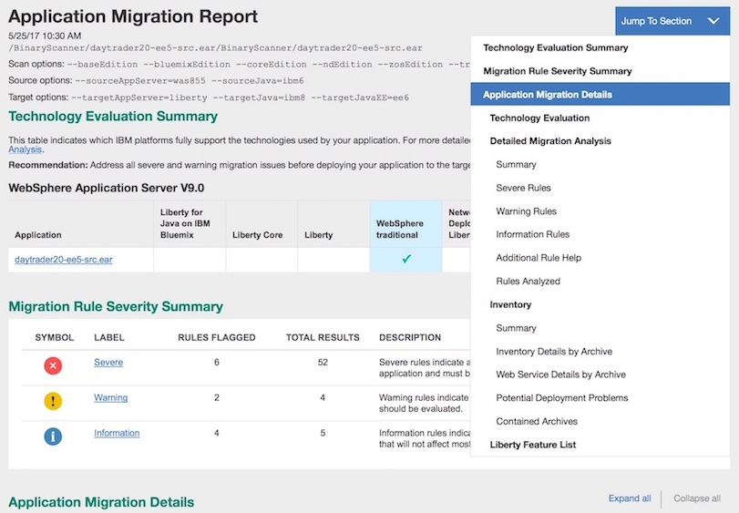
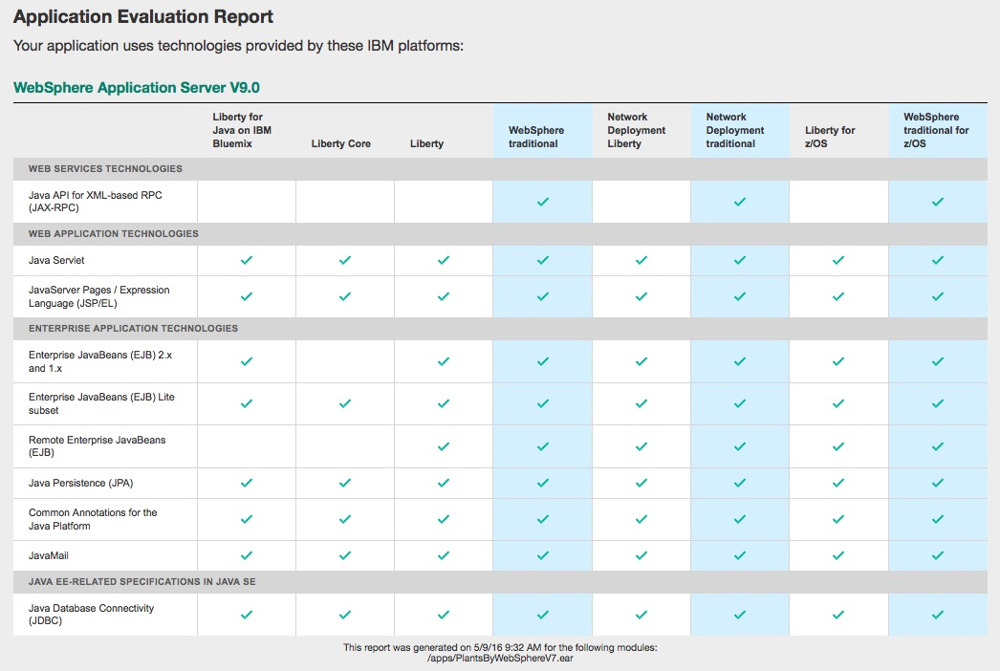
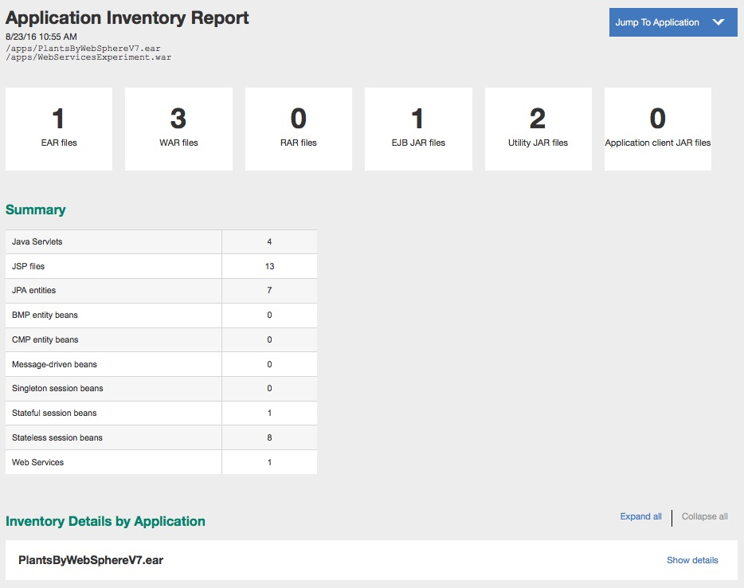

A brief overview of four migration tools that can help you move applications to Liberty from traditional WebSphere Application Server.
Tools simplified!
If you want to move applications to Liberty or Liberty for Java on IBM Bluemix, there are four migration tools that can help speed up the process:
- Migration Toolkit for Application Binaries
- WebSphere Migration Discovery Tool
- WebSphere Application Server Migration Toolkit
- WebSphere Configuration Migration Tool
See our migration home page for a description of each of these tools.
Tools for each step along the way
The migration tools can help in each step of the migration process:
- Initial application evaluation and planning: Migration Toolkit for Application Binaries or the Eclipse-based Migration Toolkit and the WebSphere Migration Discovery Tool
- Detailed analysis: Migration Toolkit for Application Binaries or the Eclipse-based Migration Toolkit
- Application development: Eclipse-based Migration Toolkit
- Configuration migration: WebSphere Configuration Migration Tool
Also use the WebSphere Developer Tools for additional help with adding features to your configuration and for an overall great developer experience.
1. Initial application evaluation and planning
As a first step, I prefer to use the Migration Toolkit for Application Binaries to scan application binaries. The new Application Migration Report makes it easier than ever to analyze your application binaries for migration to Liberty. This report combines the content of the Application Evaluation Report (–evaluate), the Detailed Migration Analysis Report (–analyze), the Application Inventory Report (–inventory), and the feature list configuration file (–featureList). The Application Migration Report is generated with the –all action, which is the new default action.
Running the binary tool is as simple as:
java -jar binaryAppScanner.jar MyApplication.ear
This creates an Application Migration Report in HTML format as shown below. Use the --help option to learn the other options including the JSON format option.
{kind=link}

To just evaluate application binaries for the technologies they use and the IBM platforms that support those technologies, you can use the –evaluate action.
java -jar binaryAppScanner.jar MyApplication.ear --evaluate
Evaluate the report to determine where the application is best suited to run. If there is no check mark for a technology, it is not supported on that WebSphere edition without a more substantial technology shift. If you point to a folder, a summary of the applications and the IBM platforms that fully support the technologies used by each application is included at the top of the report. You can select a particular application in the summary to see the details on the technologies used and where they are supported.
{kind=link}

If you want a simple yes/no answer whether your application’s technologies are supported on a particular platform you might find the summary in the JSON report useful to provide the answer.
{
"report": "technology",
"version": "1.0",
"options": [
],
"applications": [
"/apps/PlantsByWebSphereV7.ear"
],
.... technology data is omitted
"summary": {
"bluemixLiberty": false,
"libertyCore": false,
"liberty": false,
"websphereTraditional": true,
"ndLiberty": false,
"ndTraditional": true,
"zosLiberty": false,
"zosTraditional": true
}
}
You can also use the Migration Toolkit for Application Binaries to produce an inventory report of your applications. The inventory report helps you understand the content of the application such as how many Servlets, JPS files, EJBs, utility JAR files, and more. This information is useful when filling out the questionnaire in the WebSphere Migration Discovery Tool which is used to estimate the effort required for your migration project.
Produce this report by running:
java -jar binaryAppScanner.jar MyApplication.ear --inventory
The default Application Inventory Report format is HTML as shown below. There is a lot more information in this new report than can be shown here, so check it out.
{kind=link}

2. Detailed analysis
The next level of scanning can be done with either the Eclipse-based tool or using the Detailed Migration Analysis report from the binary scanning tool. With the detailed report from the binary scanning tool, you can investigate further without access to the source code. The binary scanning tool includes the same rules that the Eclipse-based Migration Toolkit provides for WebSphere version-to-version rules (V6.1+) and Java SE (V5+) migration rules. If you are moving your application from older releases (before WebSphere Application Server V6.1) or third-party application servers, you will need to use the Eclipse-based tool.
Detailed analysis gives you insight to application issues such as:
- Cloud connectivity considerations
-
Changes to the Javaâ„¢ Runtime Environment (JRE) encountered in Java SE 5, 6, 7 and 8
-
Removal of previously deprecated features
-
Behavior changes in product APIs
-
Changes resulting from Java EE specification clarifications
-
Deprecated features
-
WebSphere APIs not available on Liberty
-
Optional Java EE technologies not available on Liberty
-
Differences in technology implementations
-
Java EE 7 differences
- Deployment descriptor differences when moving from third-party application servers.
Using the --analyze parameter to run the binary scanner tool for detailed analysis, just set your source and target application server parameters. For example,
java -jar binaryAppScanner.jar MyApplication.ear --analyze
--sourceAppServer=was70 --targetAppServer=liberty --targetCloud=bluemix
Again, use --help for more options.
3. Application development
When you are ready to make code changes, use the Eclipse-based Migration Toolkit to scan your application and quickly associate application differences with the source code that needs changing. Where possible, the Eclipse-based tool has quick fixes that you can optionally use to make changes to your code. When a quick fix is provided, you can use a side-by-side compare tool to see and understand the changes being recommended before applying the fix.
Configure the analysis tool by selecting the Run > Analysis menu. Create a new Software Analyzer configuration. Choose the scope of the analysis and select the rules to run. Select a Rule Set and click Set to configure the right migration rules for your scenario.
{kind=link}
After you click Analyze, the results of your scan are displayed, and you can go through each result to determine the changes needed to your application. Whether in the configuration dialog or in the Software Analyzer Results view, select any rule and press F1 (Shift+F1 for Linux) to get rule-specific help.
When you are in development mode, the IBM WebSphere Application Server Developer Tools for Liberty, available from WASdev.net or Eclipse Marketplace, enables you to easily interact with the running Liberty server for deploying and debugging. As you deploy applications to the server, the tools also dynamically adds features to the server configuration that are required by the application.
4. Configuration migration
Depending on where you are migrating from, we have additional tools to help move configuration.
When you are moving from Tomcat, the migration toolkit has a Tomcat configuration migration tool included to assist in moving Tomcat server and application configuration.
When you are moving from JBoss, WebLogic, and WebSphere traditional, the WebSphere Configuration Migration Tool helps move Java EE resource configuration to the Liberty server.xml.
No matter where you are migrating from, the feature list configuration generation available with the binary scanner tool is useful for getting your Liberty server ready to host your application. A feature list XML configuration file is generated when using the –featureList action. The feature list content can be copied to your Liberty server.xml, or the XML file can be included using the <include> element. The feature list information is also included in the Application Migration Report generated with the –all action.
Ready, Set, Go!
Take advantage of these free tools to step through the migration process with ease.
Get the Eclipse-based tools! Get the command-line tool!
I prefer to use the Migration Toolkit for Application Binaries to scan application binaries but it always throws errors whenever I try to do ‘java -jar binaryAppScanner.jar C:\Git_repository\…..1.0.11.ear’
Exception in thread “main” java.lang.reflect.InvocationTargetException
at sun.reflect.NativeMethodAccessorImpl.invoke0(Native Method)
at sun.reflect.NativeMethodAccessorImpl.invoke(Unknown Source)
at sun.reflect.DelegatingMethodAccessorImpl.invoke(Unknown Source)
at java.lang.reflect.Method.invoke(Unknown Source)
at org.eclipse.jdt.internal.jarinjarloader.JarRsrcLoader.main(JarRsrcLoader.java:58)
Caused by: java.lang.UnsupportedClassVersionError: com/ibm/ws/kernel/feature/resolver/FeatureResolver$Repository : Unsupported major.minor version 51.0
at java.lang.ClassLoader.defineClass1(Native Method)
Not sure of the root cause. Pleas advise.
Akhil, The root cause looks like the version of Java you are using. Are you using Java 6? Can you try at least Java 7 – preferably Java 8? I see that the download page says that Java 6 is still supported. We will get that corrected. Java 6 is no longer supported by the tool.
If you can’t run the tool with Java 7 or higher, the following options still work with Java 6: –analyze, –evaluate, and –inventory. However, the default –all and the –featureList option are not supported with Java 6.
Hey Akhil,
I would advise you to run the tool with Java 7. Currently, we support the “–analyze”, “–evaluate”, and “–inventory” options with Java 6. However, the “–featureList” option is not supported with Java 6.
If you are unable to run with Java 7, you can run the supported options separately with Java 6.
Thanks,
Dalia
[…] question on the Move applications to Liberty using the Migration Toolkit article just reminded me that the binary scanner isn’t just for migration. Use the binary […]
I’m having problems with the options parameters, can you tell me what’s incorrect with this custom call?
java -jar binaryAppScanner.jar ../legacyApp.ear –all ‑‑sourceAppServer=was70 ‑‑sourceJava=ibm6 ‑‑targetAppServer=liberty ‑‑targetJava=ibm8 ‑‑targetJavaEE=ee6
SEVERE: The following option was not recognized: ‑‑sourceAppServer=was70
SEVERE: The following option was not recognized: ‑‑sourceJava=ibm6
SEVERE: The following option was not recognized: ‑‑targetAppServer=liberty
SEVERE: The following option was not recognized: ‑‑targetJava=ibm8
SEVERE: The following option was not recognized: ‑‑targetJavaEE=ee6
Usage: java -jar binaryAppScanner.jar binaryInputPath [action] [options]
Hi Walter,
There is something incorrect about the dash “-” characters in your command. First, the “all” parameter needs 2 dashes: –all. Also your other dash characters look like a x’2011′ hex character rather than a x’2d’. Maybe you copy/pasted the string from a document or website that did a translation on the character? If I past your command, change the app to a file I have and retype the dashes, it works.
Thanks a lot Cindy. I made some adjustments about the encoding and could run it correctly.
Why error msg keeps jumping out…
———————————-
The file that is specified by the binaryInputPath parameter does not exist.
The specified binaryInputPath directory contains no supported binary file types.
The following option was not recognized: isc.ear
———————————-
My command: java -jar binaryAppScanner.jar binaryInputPath –all isc.ear
Change your command to the following: java -jar binaryAppScanner.jar isc.ear –all
You are meant to replace binaryInputPath with the path to your application binary.
In case I want to do a migration to Liberty there is a nice feature in the Eclipse plugin to generate a server.xml. Is it possible to generate this file also via command line? Or any other way except going via Eclipse? Thanks!
Hi Matthias,
The WebSphere Configuration Migration Tool that migrates WebSphere property based configuration to Liberty server.xml is currently only available in Eclipse. Do you want to migrate properties based configuration to server.xml using the command-line? Or, do you want a command-line tool to scan your application and create a skeleton server.xml?
If it is the second, you can vote for https://www.ibm.com/developerworks/rfe/execute?use_case=viewRfe&CR_ID=68893.
If it is the first, let me know and perhaps also open a new RFE.
Hello Matthias,
I just wanted to point out that the referenced RFE has been implemented and delivered in December 2016. Check out the new featureList action in the binary scanner command line tool described here: https://developer.ibm.com/wasdev/blog/2017/01/25/binary-scanner-not-just-migrations-anymore/
Can I add more custom rules to the toolkit?
For e.g. I want to add rules for Hibernate or a third-party library.
Hi Narendra,
Today we don’t have the capability of adding custom rules. Which tool are you looking for this functionality? The binary scanner or the Eclipse source scanner?
You can create a request for enhancement at https://www.ibm.com/developerworks/rfe/?BRAND_ID=181.
Cindy
Tried this from Eclipse to migrate a Tomcat app. Only seleced migrate app. Just hangs. Kill eclipse then try again.. says it’s been migrated to the server.. but there are compile errors since the app uses catalina classes etc. (import org.apache.catalina.realm.GenericPrincipal;)
Probably didn’t complete at all.
Will try again… and try to migrate server too.
Can you give a little more information on what hung? Did you get analysis results. Running analysis should have told you about the org.apache.catalina classes in use. You will need to manually migrate use of those classes manually.
Hi,
I tried to use the Websphere Configuration Migration Toolkit but the file input button isn’t showing. All I see is this messages
Step 1: Specify Input
– start
– go to
– Execute the following command
I have the properties files but no way of putting it in as input.
Cheer
lupin
Hi,
Can you size the WebSphere Configuration Migration window? It looks like there is a problem with automatic sizing of the wizard.
Cindy
very helpful in providing the inital considerations and planning for any migration